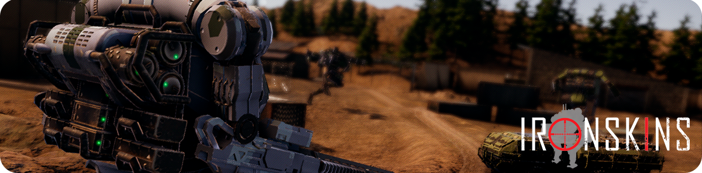
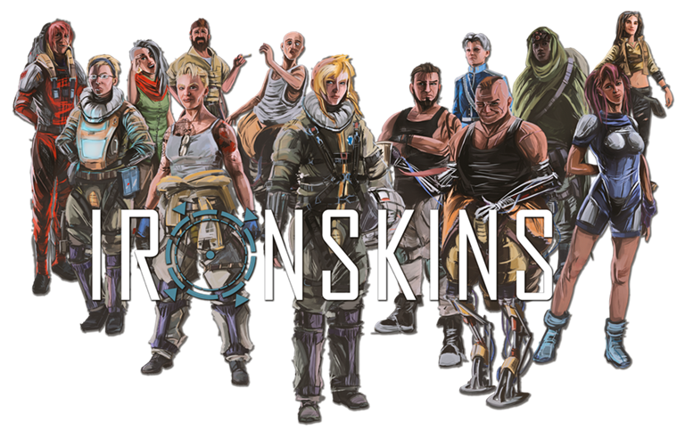
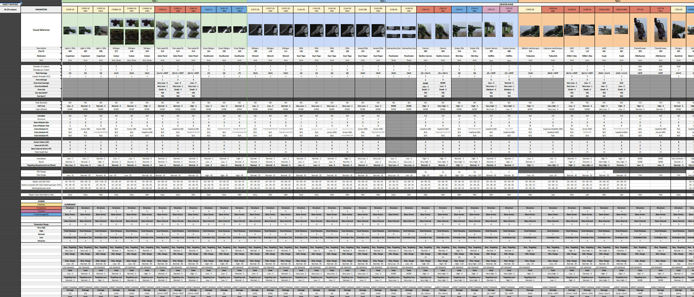
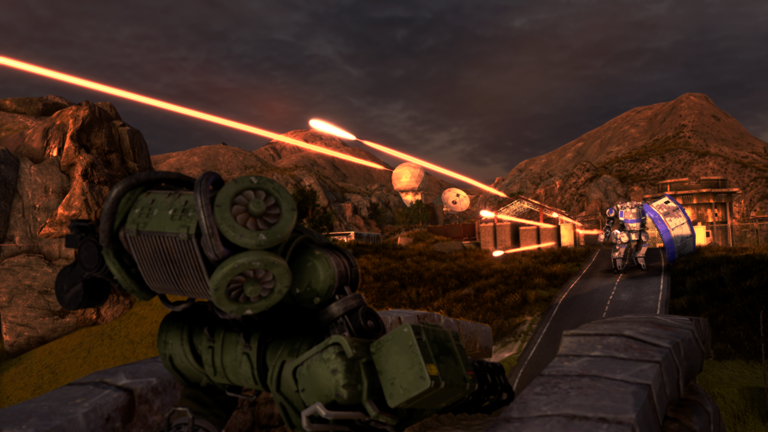
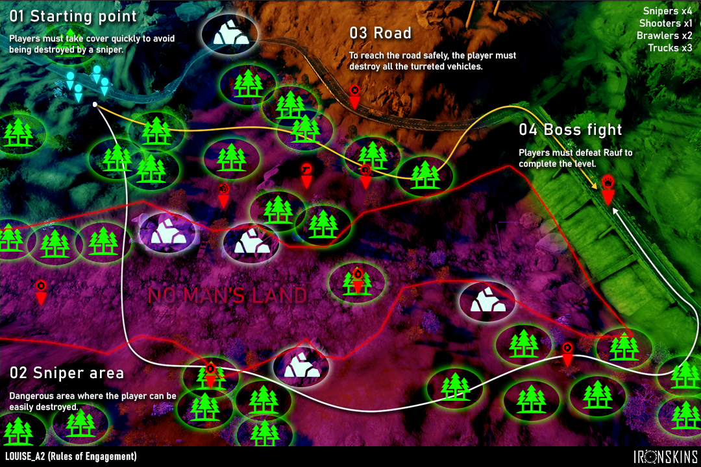
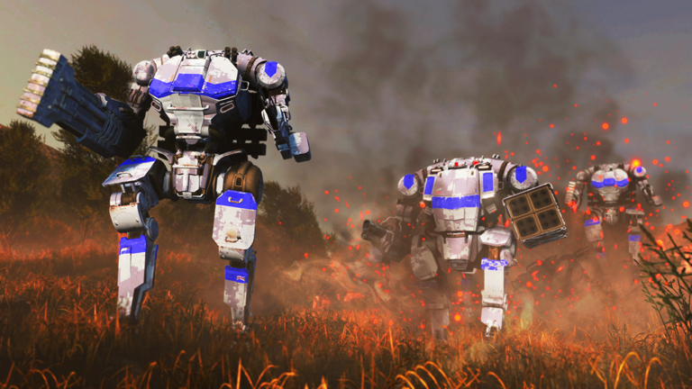
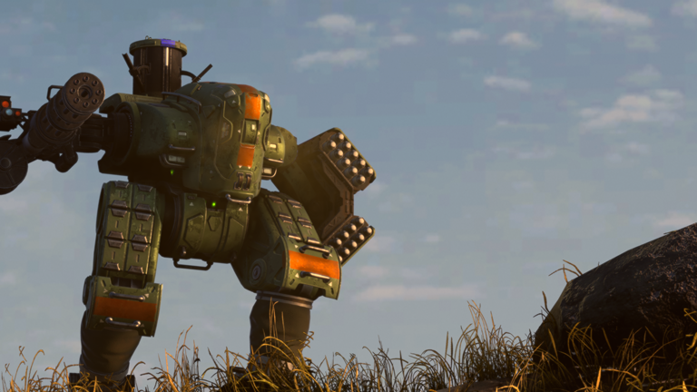

IRONSKINS
"On July 24th, 2043—the night of a thousand lights—a massive laser strike wiped out 95% of global air and space assets, ending air dominance overnight.
From the ashes rose a new era: the age of the Ironskins..."

'IRONSKINS' (pending release) is a turn-based tactical game that blends RPG elements with a dynamic narrative, where player decisions reshape the story. The plot centers on a European squad of pilots operating mechs called ironskins as they hunt down the Crimson Brigade, a mercenary group secretly fueling a civil war in Cyprus.
I started working on this project in February 2023, right after joining Aheartfulofgames S.L.To my surprise, Ironskins was already complete and fully functional. However, management had discovered two critical issues too late: the mechanics were hard to understand, and the gameplay felt long and tedious.
I was hired to join the small team leading a full mechanical overhaul of the game. We redesigned almost everything from scratch, making sure to preserve and strengthen what already worked.
It was a massive challenge, since my tasks covered design areas I was less familiar with, such as weapon balancing and economy design. The biggest challenge was polishing every level, which involved:
- Correcting and refining dialogue and camera positions.
- Verifying that all narrative triggers fired correctly.
- Balancing difficulty by adjusting weapons and repositioning elements in each level.
- Introducing music changes and events at key narrative moments.
- Reviewing and improving level design through carefully calculated tweaks to optimize the player experience.

The player can recruit new pilots for their squadron depending on the decisions they make during the game.
My first task was balancing the game's entire arsenal. I began by studying each variable and how they interacted during gameplay. The weapons were split into two categories—ranged and melee—whose lethality fluctuated based on the pilot's stats. Ranged weapons consumed targeting points to fire, generated heat, and lost targeting points due to recoil. Some could also be fitted with AI modules that enhanced pilot stats or came in ballistic, electromagnetic, or fusion variants.
The sheer number of parameters was a bit overwhelming, but I managed to balance these variables without diluting each weapon's thematic identity, while ensuring a clear progression: as players advanced, they acquired increasingly powerful weapons to face more lethal enemies.
Later, I took responsibility for balancing the artillery—grenades and missiles—the support systems (rapid cooling, enhanced mobility, extra targeting points, and emergency flares)—and all other components that let players customize their squad's Ironskins.

To carry out the balancing of ironskin parts it was necessary to organize everything in spreadsheets.In this way it was easier to modify the variables.
'IRONSKINS' explores the scars that war leaves on those who fight it. To reflect the impact of trauma on pilots during combat, the game initially included a “stress” mechanic: taking damage or losing Ironskin components would build stress in the pilot. When certain thresholds were exceeded, character-unique effects triggered—perhaps one pilot would panic and retreat, while other would stay calm and shoot more accurately.
Although this mechanic was unique and engaging, it was almost cut due to time constraints during the overhaul. Implementing specific "stress-out" behaviours for each of the characters in the game would take many weeks of work and iteration, after all.
However, I took charge of redesigning it to fit the game's new vision. My proposal involved:
- Defining a limited set of "stress effects" (for example, one stress effect restricts a pilot to a single action per turn, while another compels them to automatically fire at any enemy within their attack range).
- Allowing combinations of these "stress effects" to generate "stress-out behaviours". Unlike the original proposal, different characters can share the same “stress-out behaviours" .
- Keeping implementation simple. The coding team only needed to prepare the initial "stress effects", as any designer could easily implement the "stress-out behaviours" on their own.
Thanks to this design, the coding team integrated it in under a week. I then “translated” the pre-overhaul system into the new framework, ensuring we retained the stress mechanic without compromising the development schedule.

When pilots become stressed, their behaviour patterns can change dramatically.
I also conducted a comprehensive review of every level, because although they were already designed and implemented, they lacked balance and hadn't been thoroughly playtested—many hadn't functioned correctly for some time.
Some stages demanded deeper work. In Rules of Engagement, for example, the goal was to teach players to use cover against a squad of snipers. But I found that it was possible to dash from one end to the other without using cover and suffer no real penalty.
My intervention included:
- Rebalancing the snipers and placing them in strategic locations to pose a genuine threat.
- Repositioning cover to create two distinct paths: one direct and risky, the other longer but safer.
- Tweaking the level design so that using cover became the optimal way to progress without unnecessary losses.
With these changes, Rules of Engagement transformed from a simple run-through into a clear tactical challenge that reinforced the mechanics we wanted players to learn.

Quick sketch I made on a screenshot of the Rules of Engagement map to redesign the level.
'IRONSKINS' also features an extensive repertoire of cutscenes, most of which I designed and implemented. When I joined the project, my experience in shot composition was limited, but after two years of continuous work I believe the final result meets expectations.
The real challenge arose from strict animation constraints: I only had at my disposal run and walk animation cycles because actions like firing or having your mech destroyed were entirely code-driven. To deliver elaborate cutscenes, I had to devise creative workarounds that made the most of these minimal resources.
For example, in a rescue mission I staged characters fleeing missiles and bursts of gunfire from pursuers kept deliberately off-screen (since there were no shooting animations), generating the necessary tension to drive the story without additional animations.

All cutscenes had to be made with very limited animation resources.
Looking back, I'm incredibly proud of everything we achieved with 'IRONSKINS'. While the project posed significant challenges, taking the lead across so many different areas allowed me to elevate the game's quality and test my skills in design fields I don't normally explore.
